P31p31_finish_workshop.png
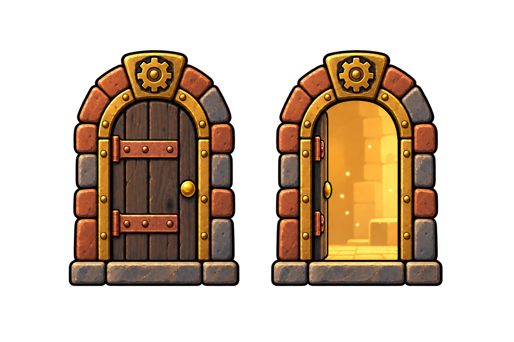
1536 × 1024 px
Два состояния кирпично-латунных ворот: закрытое слева, открытое справа; медные полосы на двери, шестерня в замковом камне. Порог общий, створка у левого косяка. Исходник прозрачен; слабый остаток alpha по краям отмечен в проверке. В игре масштаб как у P17, 102,4 × 140,8 px.
P21p21_conveyor.png
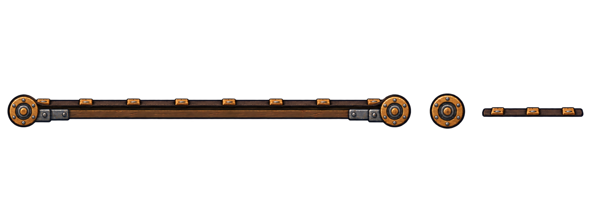
2172 × 724 px
Три детали слева направо: низкая полоса с двумя барабанами, отдельный круглый барабан, короткая поверхность для прокрутки. Без высоких ножек и перспективы пола. Пропорции приблизительные; в игре полоса 384 × 25,6 px, барабан диаметром 25,6 px. После нарезки проверить повтор середины и сохранить круглость отдельного барабана.
P26p26_wires.png
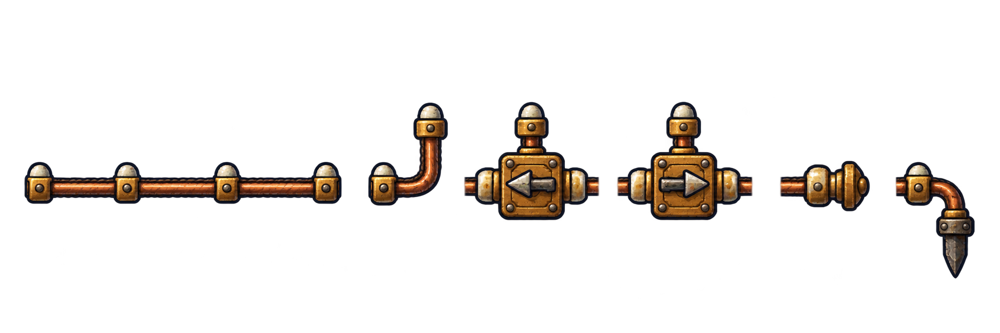
2172 × 724 px
Шесть отдельных деталей: прямой провод с изоляторами, угол 90°, две развилки со стрелками влево/вправо, клемма, заземление. Направления стрелок различаются; коробки совпадают по масштабу. При подключении толщину провода и размеры коробок задать по заданию.
P28p28_cracked.png
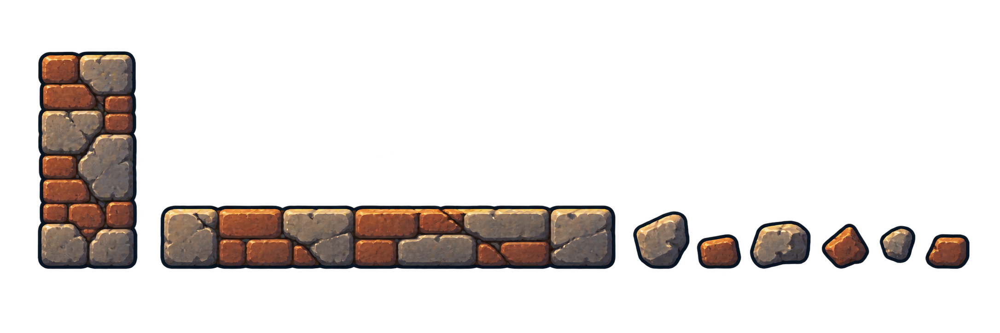
2172 × 724 px
Вертикальная треснувшая стена, горизонтальный пролёт и ровно шесть отдельных обломков кирпича и камня. Все детали внутри кадра, края закончены. После нарезки проверить повтор кладки и трещин; игровая стена 64 × 192 px, пролёт 384 × 64 px.
P30p30_beetle.png
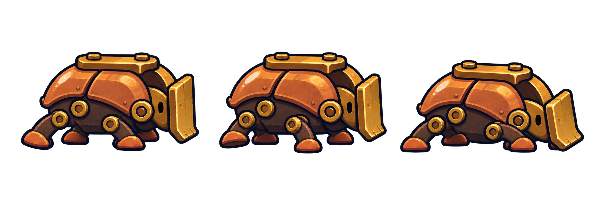
2172 × 724 px
Три позы жука вправо: два шага и толкание с опущенной головой-лопатой. Широкая площадка на панцире, медь и латунь, ноги в разных положениях. При подключении выровнять рамки и опорную точку, целевой размер 70,4 × 57,6 px.
P29p29_spark.png
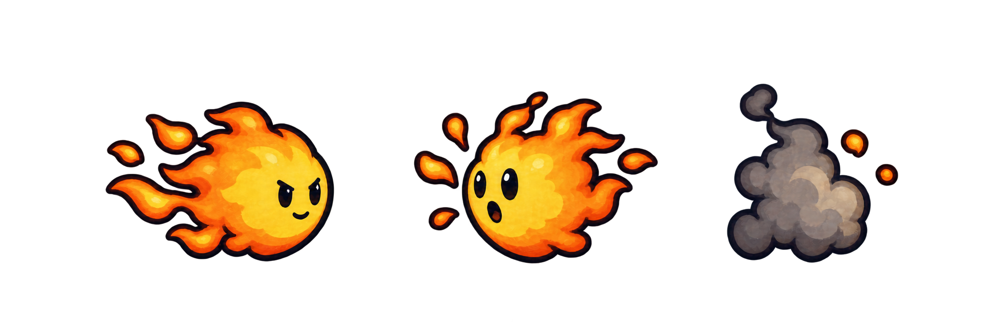
2172 × 724 px
Три состояния: бег вправо с пламенем влево; отскок влево с удивлёнными глазами и пламенем вправо; затухание — серый дым с двумя угольками. Рук и ног нет. При нарезке включить отдельные язычки пламени в рамку соответствующего состояния; целевой диаметр ядра 25,6 px, с пламенем около 38,4 px.
P27p27_keg.png
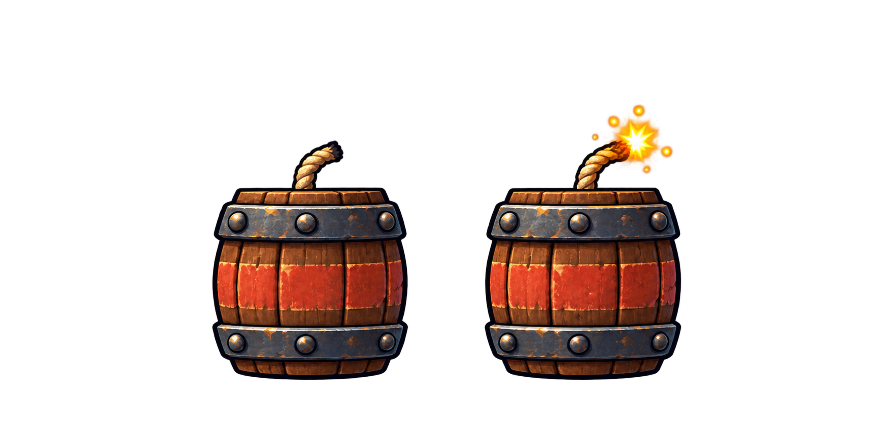
1774 × 887 px
Два одинаковых бочонка с обычным и горящим фитилём. Верх исправлен на вид строго сбоку; полоса пустая, без знаков. У состояний общий низ корпуса. Целевой размер тела 41,6 × 44,8 px, искру учесть отдельно при нарезке.
P22p22_rotating_beam.png
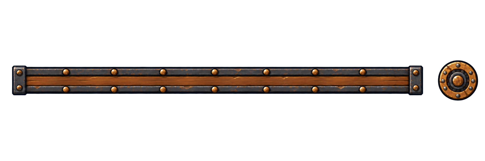
2172 × 724 px
Одна горизонтальная балка с железными накладками и отдельная круглая ось с центральным болтом. Круглые ролики на концах удалены. Ритм середины однородный; при нарезке привести балку к 512 × 25,6 px, ось к диаметру 57,6 px. Пропорции исходника приблизительные.
P23p23_brittle_floor.png
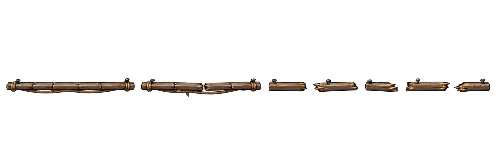
2172 × 724 px
Целый и треснувший тонкий настил, затем ровно пять щепок. Уменьшены толщина досок и провис верёвки. Все части внутри кадра; при нарезке целый настил привести к 256 × 16 px, у треснувшего сохранить тот же пролёт и точку привязки.
P24p24_bellows.png
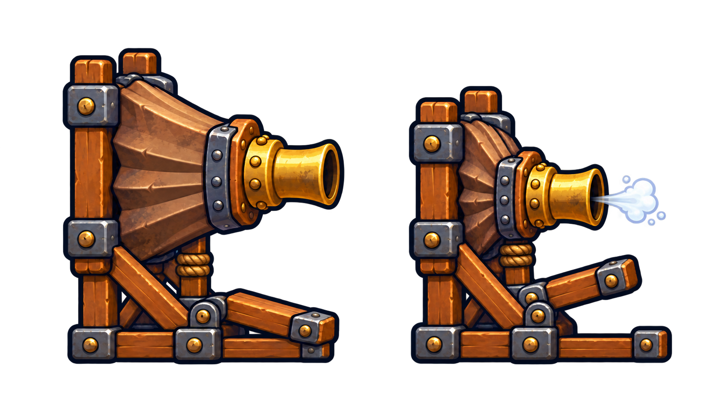
1672 × 941 px
Два состояния мехов с соплом вправо: раскрытое слева, сжатое справа с небольшим воздушным облачком и поднятым рычагом. Складки сжатого состояния заметно сближены, основания на общей линии. Стойки в исходнике отличаются по высоте: при подключении согласовать их масштаб и привязку сопла, целевой рисунок 102,4 × 115,2 px.
P25p25_crane.png
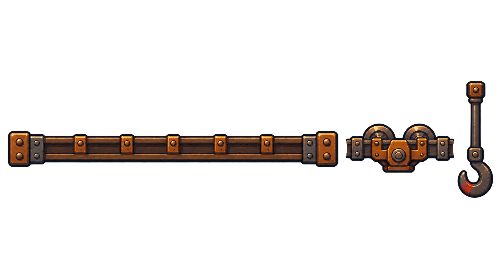
1755 × 896 px
Три отдельные детали: рельс, двухколёсная тележка, прямая тяга с большим открытым крюком. Тяга без цепи, середина однородная. При нарезке рельс 384 × 23,68 px, тележка 83,2 × 51,2 px, тяга толщиной 7,68 px и крюк около 32 px.
W2L04w02_lm04_sorting_yard.png
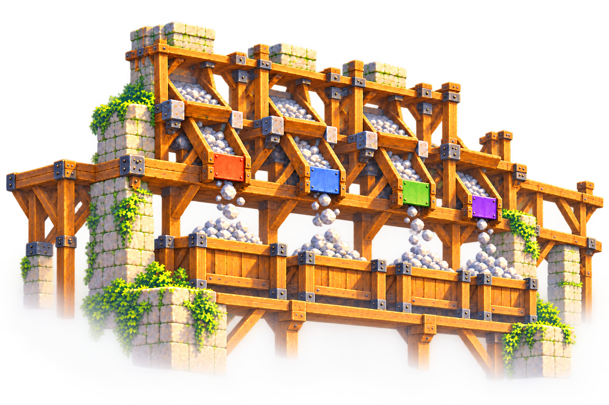
1536 × 1024 px
Сортировочный двор: четыре желоба, оранжевые, синие, зелёные и фиолетовые ворота, каменные блоки и отдельные деревянные бункеры. Лишний дальний виадук удалён, у основания восстановлен мягкий белый туман.
W2L05w02_lm05_windmill_bellows.png
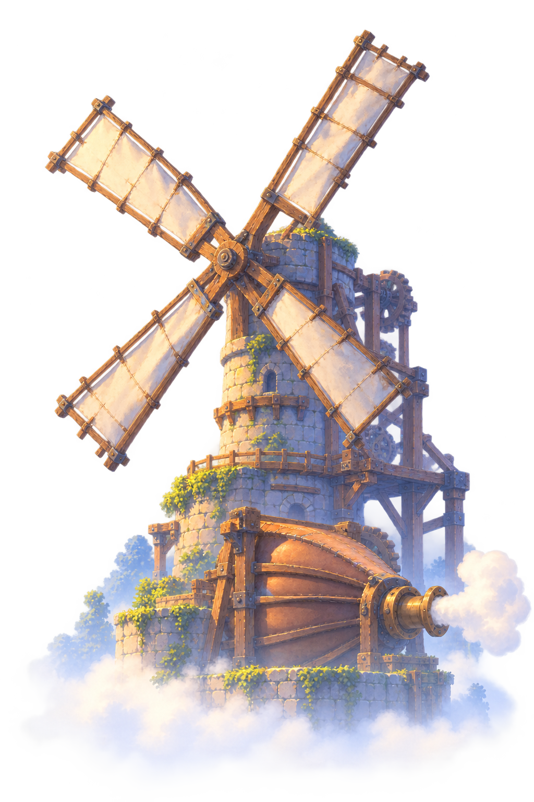
1024 × 1536 px
Ветряк с четырьмя деревянными парусными крыльями на круглой башне, большие мехи у основания и белый воздух из латунного сопла. Силуэт целиком внутри кадра, утренний свет двора и мягкий туман.
W2L06w02_lm06_switch_tower.png
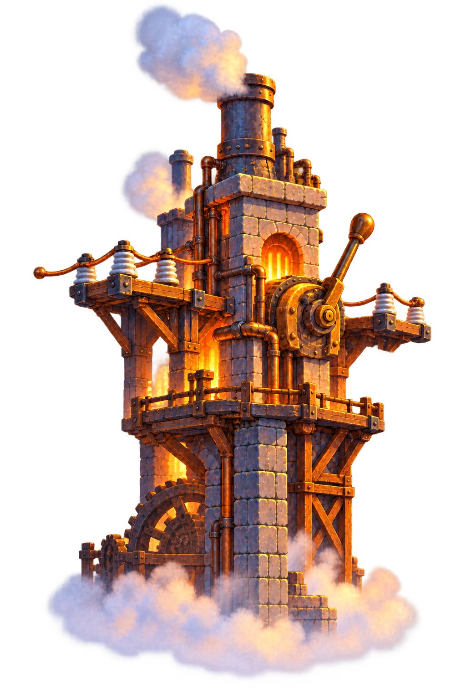
1024 × 1536 px
Стрелочная башня с большим латунным рычагом, медными проводами в обе стороны и фарфоровыми изоляторами. Лишние дальние арки удалены; провода закончены внутри кадра, по бокам прозрачное поле. Свет кузни и туман у основания.
W2L07w02_lm07_shift_bell.png
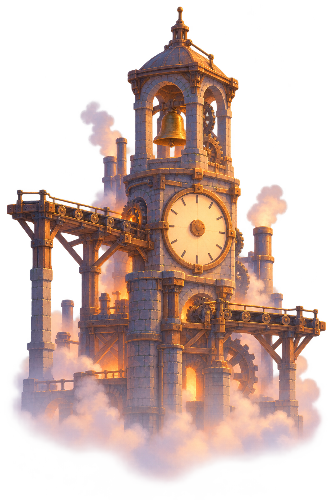
1024 × 1536 px
Башня смены с бронзовым колоколом, циферблатом только с делениями и двумя конвейерными галереями на разных высотах. Чисел и стрелок на циферблате нет; башня целиком в кадре, мягкий пар у основания.
W2L08w02_lm08_gantry_crane.png
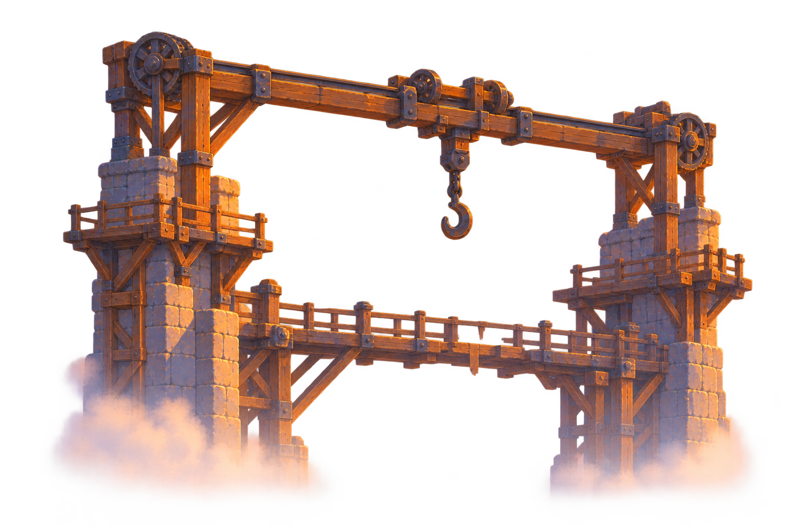
1536 × 1024 px
Портальный кран между двумя башнями: тележка, большой подвесной крюк, нижний деревянный проход с отсутствующими досками. Один связанный ориентир, мягкий свет кузни; весь кран внутри кадра.
W2L09w02_lm09_powder_store.png
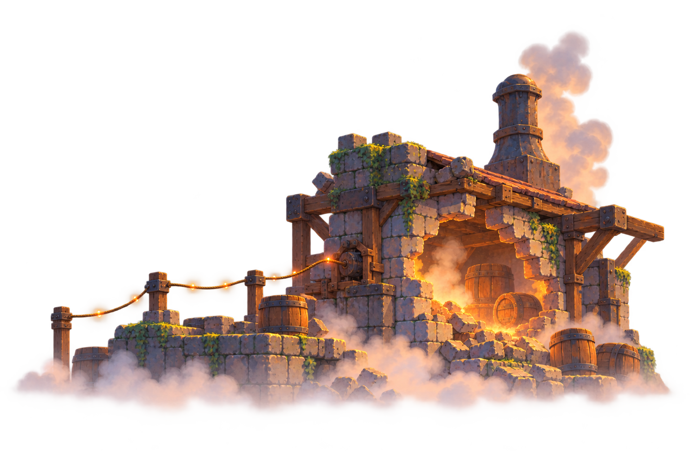
1536 × 1024 px
Пороховой склад с большим проломом, бочками, длинной линией фитиля на деревянных столбиках и дымом. Тёплый свет кузни, мягкое основание в тумане; линия фитиля внутри кадра.
W2L10w02_lm10_weighing_tower.png
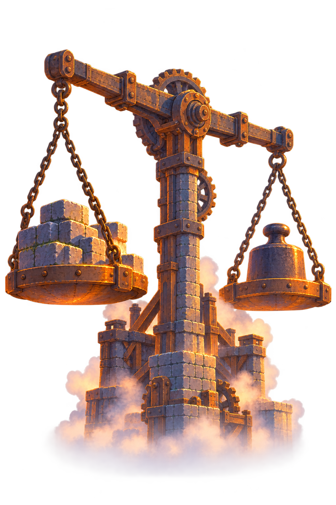
1024 × 1536 px
Высокие весы с двумя латунными чашами на цепях: слева каменные блоки, справа большая железная гиря. Обе чаши и балка целиком внутри кадра, туман у основания.
W2L11w02_lm11_beetle_statue.png
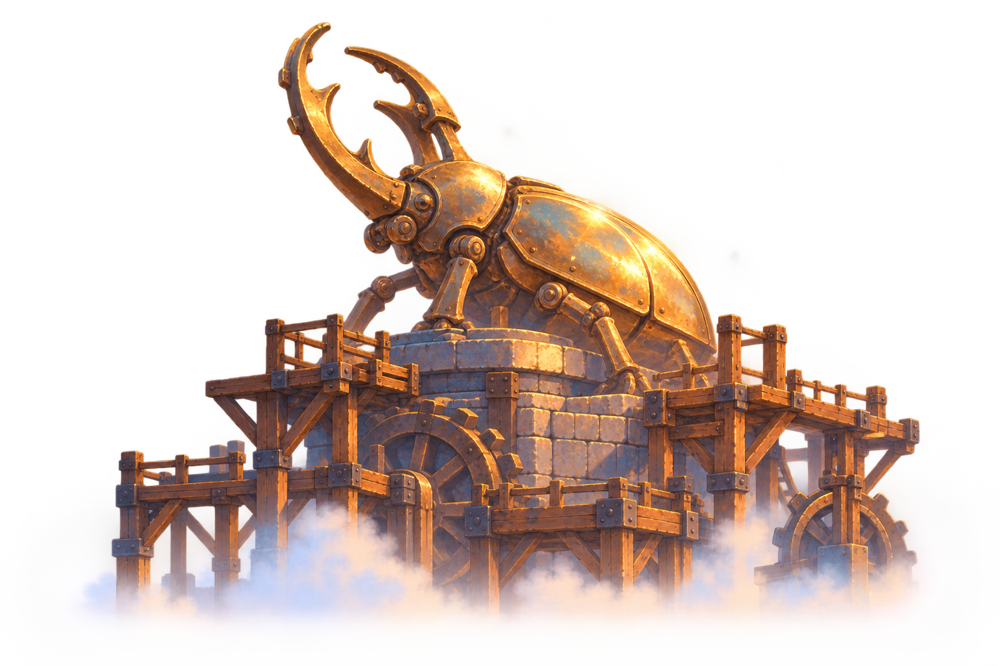
1536 × 1024 px
Большая декоративная медно-латунная статуя жука на каменном постаменте среди связанных деревянных лесов. Полированный панцирь, мягкий свет зоны и туман у основания; без надписей.
W2L12w02_lm12_collapsed_hall.png
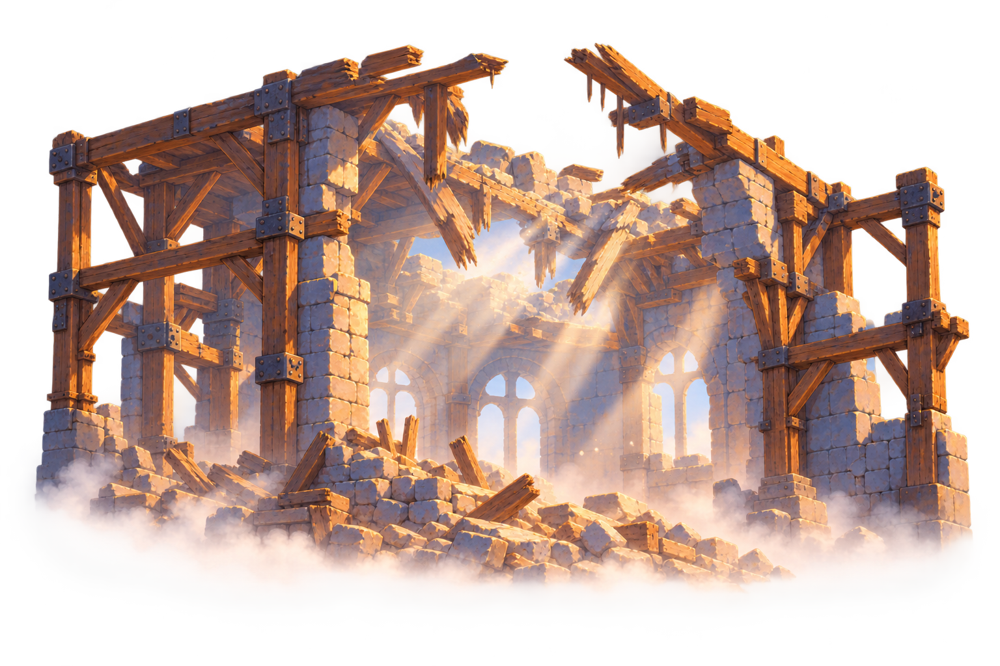
1536 × 1024 px
Цех с рухнувшей кровлей: сломанные и свисающие балки, завал из камня и кирпича, подпорки и пыль в лучах света. Проём крыши и завал читаются, рисунок не страшный.
W2L13w02_lm13_lock_gate.png
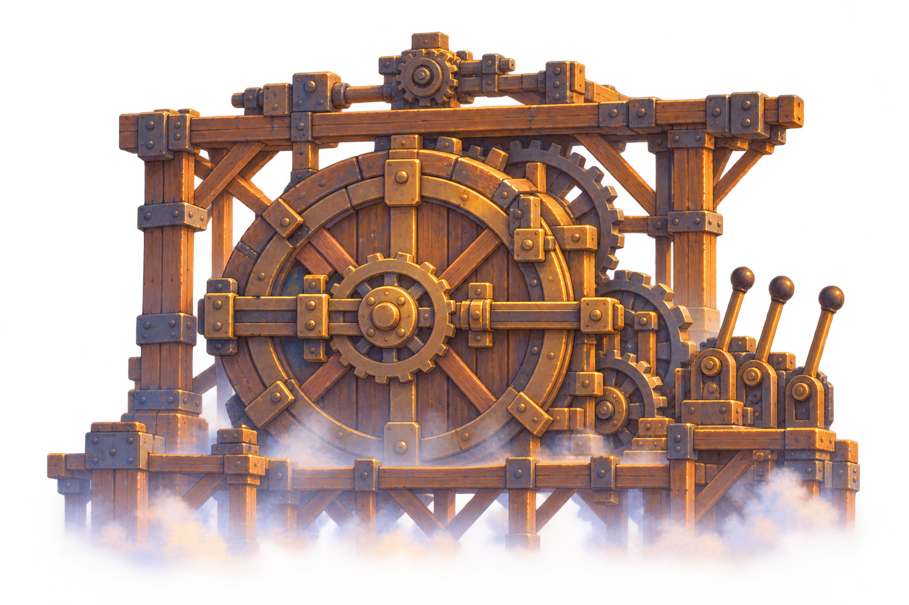
1536 × 1024 px
Круглые механические ворота из дерева и латуни, связанные шестерни и засовы, ровно три больших рычага справа. Один связанный ориентир в деревянной раме, без тёмного проёма.
W2L14w02_lm14_spring_arena.png
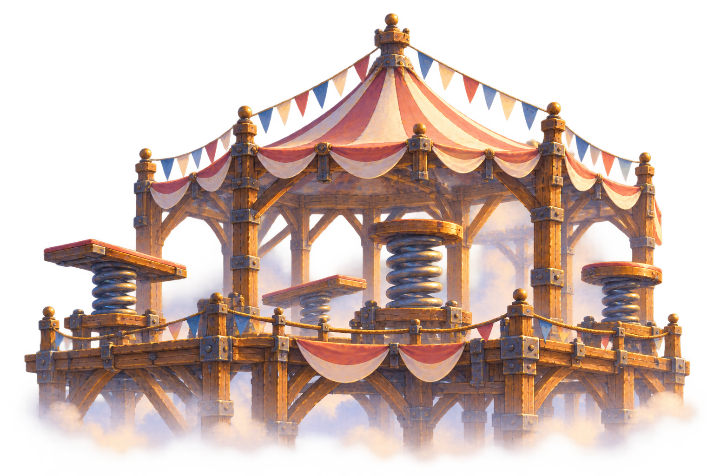
1536 × 1024 px
Испытательный манеж пружинщиков: полосатый навес, большие пружины и батуты на выставочных подставках, маленькие пустые вымпелы. Без персонажей, знаков и надписей, мягкий туман у основания.
W2L15w02_lm15_twin_halls.png
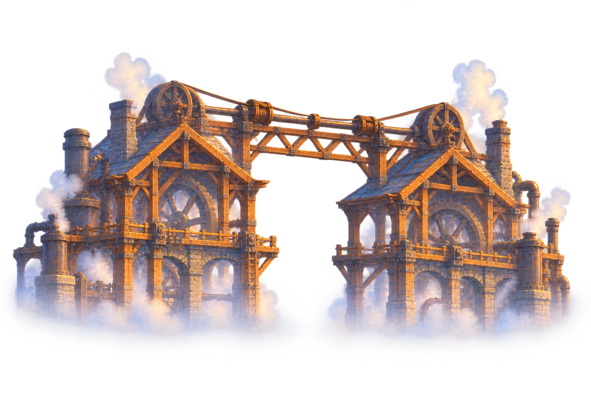
1536 × 1024 px
Два цеха-близнеца, соединённые высоко над промежутком длинным приводным валом, ремнями и шкивами, входящими в обе крыши. Два здания читаются отдельно, связанная группа в тумане.
W2L16w02_lm16_wind_tunnel.png
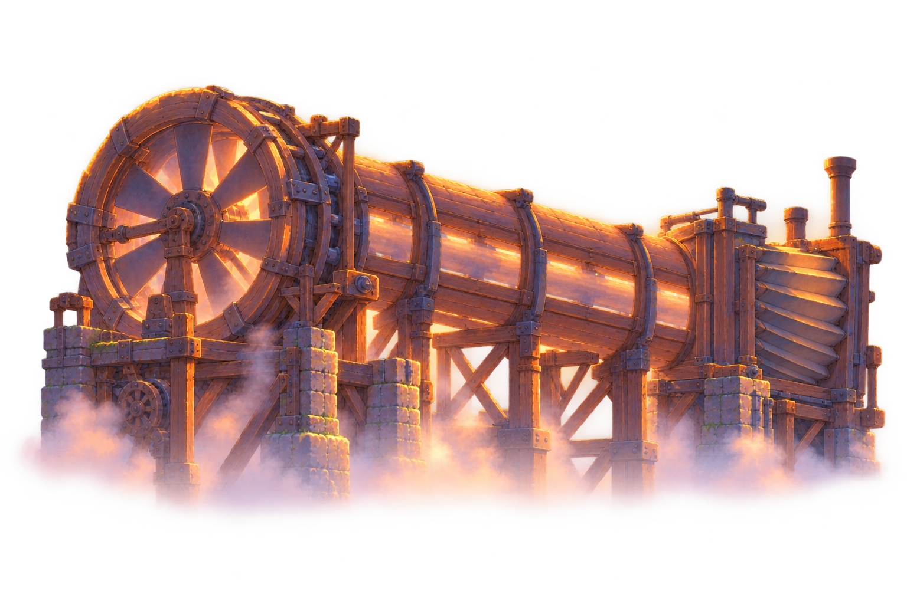
1536 × 1024 px
Длинная деревянная аэродинамическая труба на опорах, огромный вентилятор слева и мехи справа. Без воды и водопадов; цельный силуэт, закатный свет большой машины.
W2L17w02_lm17_loading_dock.png
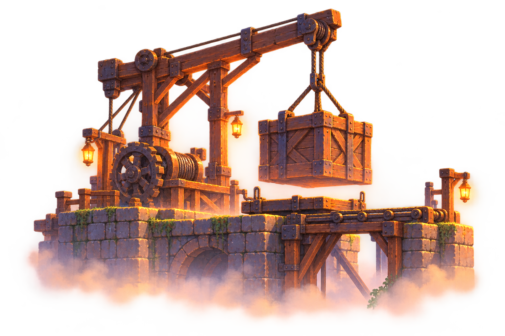
1536 × 1024 px
Погрузочный причал: один огромный окованный ящик подвешен к деревянному крану, под ним весовая площадка и короткий конвейер. Каменная пристань и тёплые фонари, закатный свет.
W2L18w02_lm18_lightning_tower.png
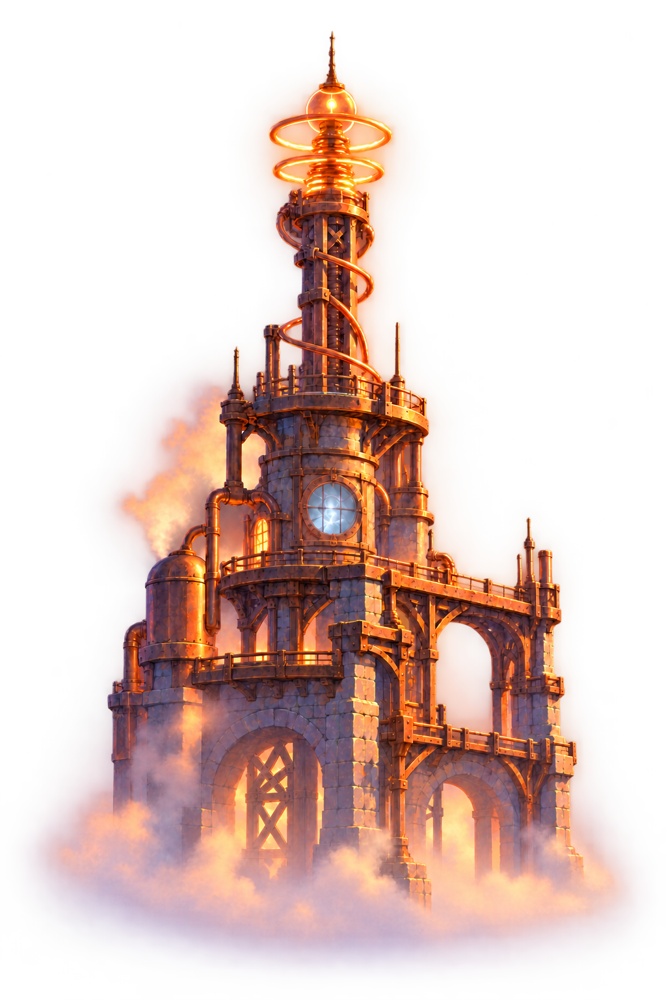
1024 × 1536 px
Башня, спиральные провода и светящаяся катушка; в круглом окне слабый дружелюбный бело-голубой призрачный свет. После правки основание и пар целиком внутри кадра; максимальная альфа по границе 2/255. Поля меньше запрошенных 7%, поэтому выбирать масштаб по видимой архитектуре.
W2L19w02_lm19_crossing.png
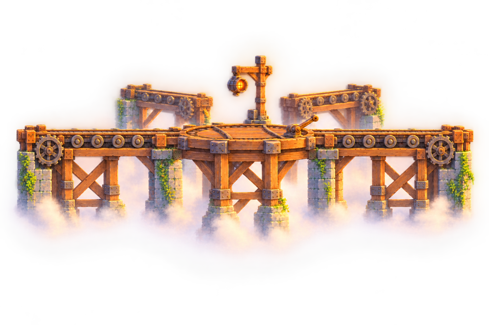
1536 × 1024 px
Четыре галереи, поворотный круг, стрелка и сигнальный столб. Высокий ракурс исправлен на боковой; дополнительные галереи показаны позади. Все концы внутри кадра. Круг виден с небольшим верхним ребром; мягкое свечение по бокам доходит до границы (альфа до 28/255), поля уже заданных. При установке смягчить контраст и подобрать дымку.
W2L20w02_lm20_machine_core.png
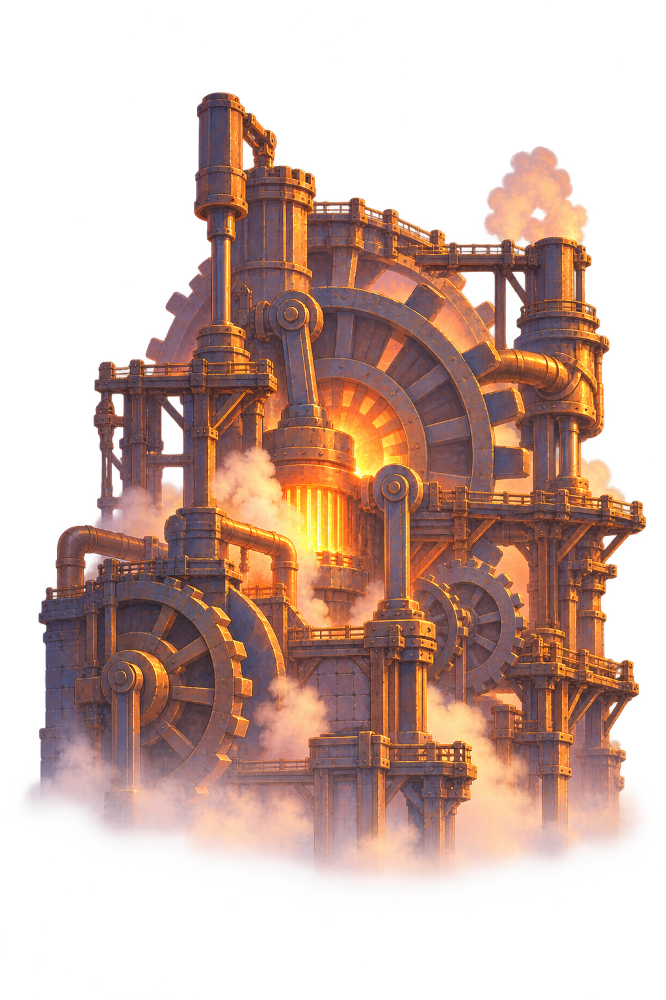
1024 × 1536 px
Сердце машины: большая стена шестерён, поршни, латунные трубы и яркое ядро печи. Портретный формат; основание в паре. При установке подобрать дымку, чтобы свечение не спорило с героями.
W2M2menu_panorama_w02.png
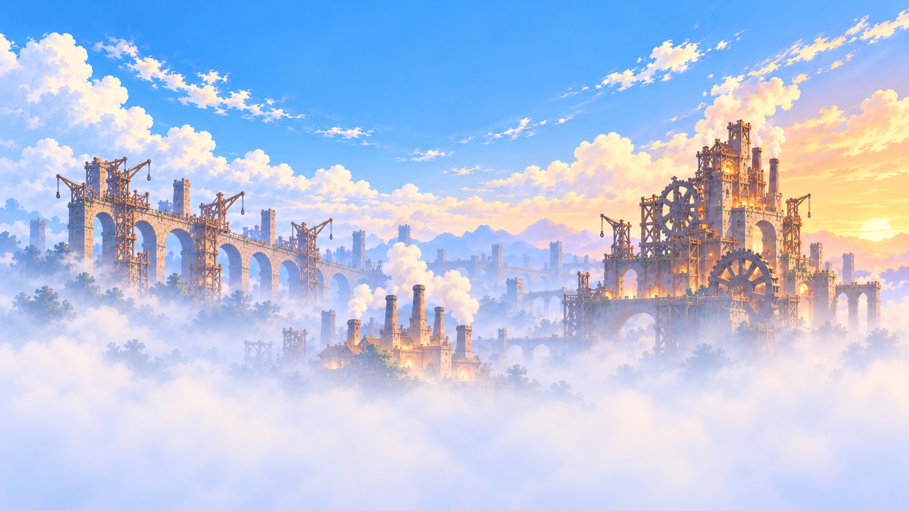
1672 × 941 px
Панорама без интерфейса: утренний двор слева, кузня в центре, большая машина справа в закатном свете. После правки арка отделена от левого края; верхний центр оставлен под заголовок, нижняя треть смягчена паром под сетку уровней. Нативный формат 1672 × 941, приблизительно 16:9.